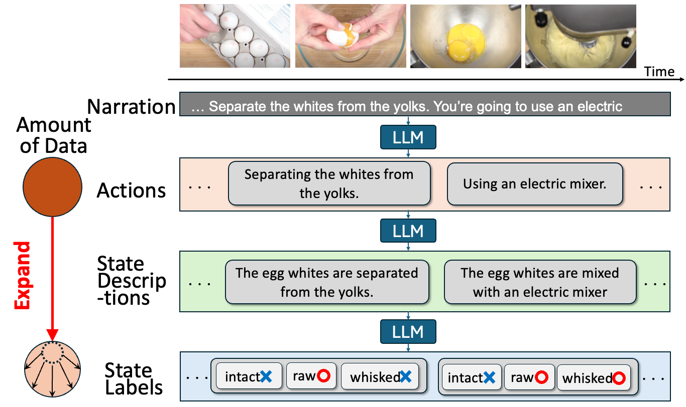
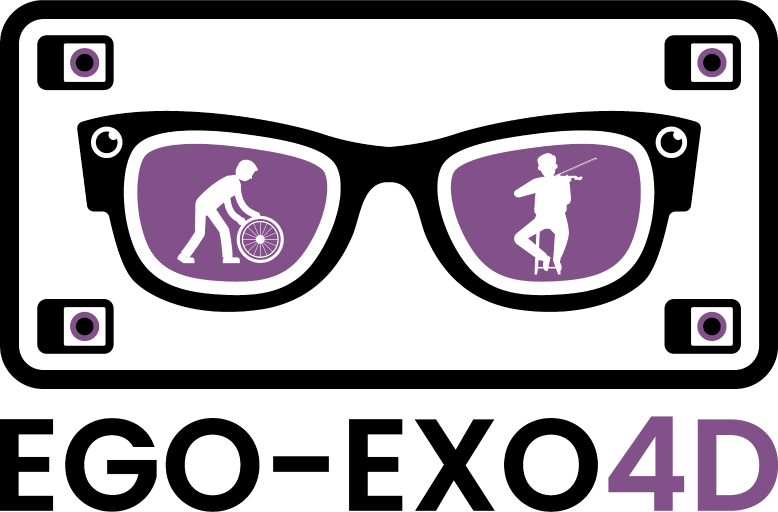

舘野 将寿
Masatoshi Tateno
I am a first-year Ph.D. student at the Graduate School of Information Science and Technology, The University of Tokyo, advised by Prof. Yoichi Sato.
Before that, I graduated from the same department in 2022 and got Master’s Degree of Information Science and Technology. I also worked as Research Assistant at AIST (2023-2024).
Email: masatate[at]iis.u-tokyo.ac.jp
News
- (September 2024) I started a one-year visit to University of Bristol, collaborating with Prof. Dima Damen.
- (July 2024) I attended ICVSS (International Computer Vision Summer School) 2024🏝️
- (June 2024) My new paper Learning Object States from Actions via Large Language Models has been accepted by LPVL Workshop@CVPR2024 🎉. See you in Seattle!
- (April 2024) I gave an invited presentation at JST ASPIRE HCVM workshop, UTokyo-IIS.
- (July 2023) I was accepted as IST-RA from April 2024.
Research Interest
- Human action and object state recognition in videos
- Vision and language
- First-person vision
Publication

Learning Object States from Actions via Large Language Models
Masatoshi Tateno, Takuma Yagi, Ryosuke Furuta, Yoichi Sato
LPVL Workshop @ CVPR 2024

Ego-Exo4D: Understanding Skilled Human Activity from First- and Third-Person Perspectives
Kristen Grauman, Andrew Westbry, Lorenzo Torresani, Kris Kitani, Jitendra Malik, ..., Masatoshi Tateno, ..., Michael Wray
CVPR 2024